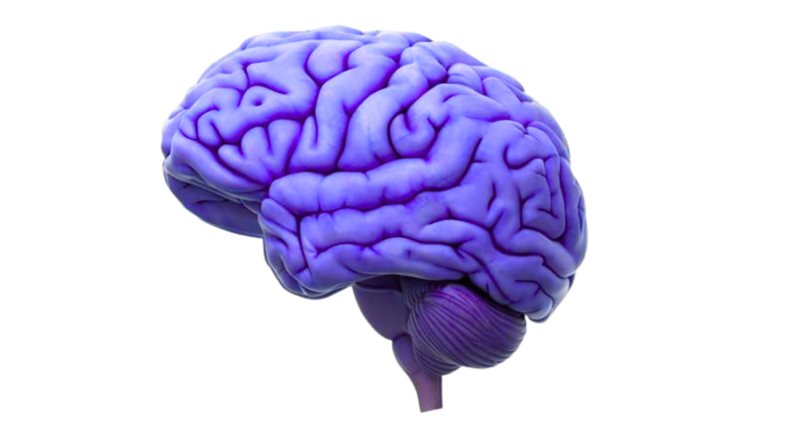

Gaming
Dos adolescentes jogam diariamente. 12% apresentam risco real de vício.

Como a tecnologia nos prende em ciclos de prazer digital
Vivemos na era da dopamina instantânea — vídeos curtos, notificações, jogos e conteúdo sexual acessível em segundos.
Cada toque na tela aciona pequenas descargas químicas de prazer, moldando o cérebro a buscar gratificação constante.
Passe o mouse sobre as partes da molécula (NH₂, OH ou o Anel) para descobrir a função química.
Esta estrutura hexagonal permite que a molécula atravesse a barreira hematoencefálica (com ajuda) e se mantenha estável no cérebro.
Estas ligações tornam a dopamina polar. É aqui que ocorre a oxidação que, em excesso, pode gerar stress oxidativo nos neurónios.
A "chave" da fechadura. É esta ponta carregada positivamente que interage diretamente com os recetores D1 e D2 para disparar o sinal de prazer.
Um ciclo de dependência silenciosa que reduz nossa capacidade de foco, paciência e satisfação genuína.
Dos adolescentes jogam diariamente. 12% apresentam risco real de vício.
Aumento do risco em jovens com alto tempo de uso em redes sociais.
De universitários (China) já consumiram, com alta correlação de dependência.

O Nucleus Accumbens recebe descargas rápidas de dopamina, criando vício instantâneo.
O cérebro reduz os receptores, exigindo estímulos cada vez mais fortes.
O Córtex Pré-frontal enfraquece, reduzindo a capacidade de foco.
O problema está em como a utilizamos — transformámos a recompensa em rotina, e o prazer em anestesia.
O projeto “Dopamine Loop” procura compreender e comunicar esse desequilíbrio, propondo estratégias para reconectar o ser humano com o esforço, o tempo e a presença.
Ao longo desta investigação, percebemos que o problema não é a molécula em si, mas a forma como a usamos para preencher silêncios que não queremos encarar. Quando transformamos cada estímulo — o telemóvel, o prazer fácil, a fuga constante — numa muleta, deixamos de perceber aquilo que realmente pede a nossa atenção: a maneira como estamos a viver.
"A verdadeira mudança começa quando paramos de nos anestesiar e passamos a nos escutar. Só assim o bem-estar deixa de ser um vício e passa a ser um caminho."